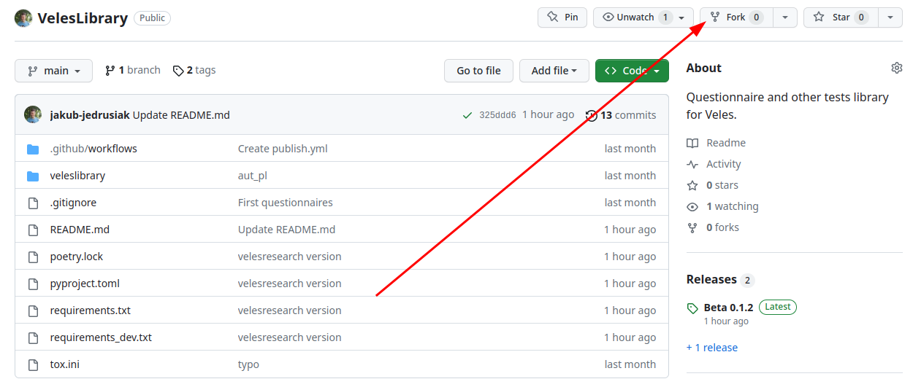
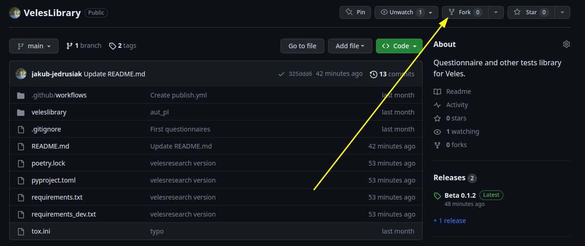
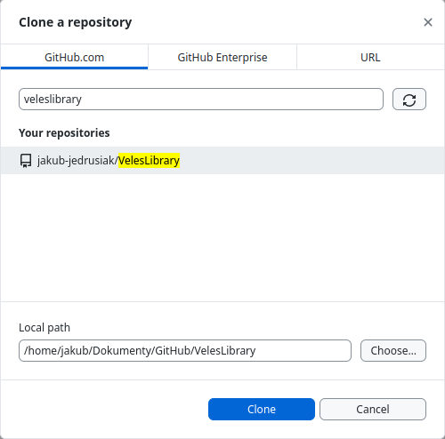
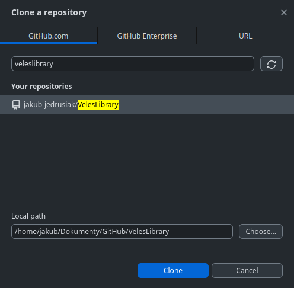

import veleslibrary.questionnaires as vqLibrary overview
Veles has a survey library designed to make studies preparation faster and easier. If you conduct psychological research, you probably want to include some standardised questionnaires or other tests. When you use a tool like MS Forms, you need to copy-paste your questionnaire for every study. Main purpose of Veles is to cut the time spent on manual tasks. Time spent on copy-pasting questionnaire items is basically wasted. The Veles Library lets you include a questionnaire like e.g. TIPI with a single command like tipi().
Using
The Veles Library is a separate python package. To use it, you need to install it with the following command:
pip install veleslibraryYou can then find the questionnaire you want to use or submit your own. Due to Veles being in its pre-alpha development, the library is, well, tiny, but we hope it’ll grow in time. Everyone can add to the library. You can check what questionnaires are available here in the docs. Navigate to one of the available sublibraries:
To include the chosen questionnaire, import the library. The veleslibrary package consists of two separate sub-packages – questionnaires and tests, where the tests package is for every test that is not a questionnaire (like AUT or Stroop test). For questionnaires in English use:
You can also import single questionnaires:
from veleslibrary.questionnaires import rseFor every other language:
import veleslibrary.questionnaires.pl as vqOr single questionnaires:
from veleslibrary.questionnaires.pl import tipiYou can then use appropriate commands to include the questionnaire in your study. By default, the return value is a list of questions. Be sure to wrap it in page() if you want a separate page with the questionnaire.
Example
from velesresearch import *
from veleslibrary.questionnaires import rse
metric = page(
"metric",
radio(
"gender",
"What's your gender?",
"Male",
"Female",
options=QuestionOptions(other=True, none=True),
),
text("age", "What's your age?"),
)
rse = page("rse", rse())
survey("rse_survey", metric, rse)Contributing
Almost everything in Veles is open-source meaning you can view the source code and contribute to it. It means you can add the questionnaires you use to the Veles Library provided they are free to use. It’s an easy way to help Veles grow!
How to contribute?
Sign up to GitHub if you haven’t already.
Go to the Veles Library repository and fork it. It will create your own copy of the library to which you can make changes freely.
 
- Clone (download) your fork. The easiest way to do it is through GitHub Desktop. Download it, install, login to your GitHub account, find your fork on the list and clone it.
 
Add your code to the appropriate file. See below for instructions on how to style your code. All the code is in the
veleslibraryfolder. Thequestionnairesfolder is for self-description questionnaires,testsis for every other type of test, like Stroop test or Alternative Uses Test. For tests in English use the main file, e.g.questionnaires.py. For other languages, use appropriate folder. If there’s no folder for your language, copy one of the existing folders, name it with two letter ISO 639-1 language code, and delete all the questionnaires from itsquestionnaires.py(ortests.py) file. Do not change__init__.pyfile or instructions inquestionnaires.py(ortests.py) file.Stage, commit and push your changes. In GitHub Desktop all the files you’ve changed are listed on the left. Click the tick next to each of them to stage them. At the bottom of the left panel add a summary of your changes and click “commit”. Then click the “push” button to send your changes to GitHub.
Open a pull request. That is a request to add your changes to the official Veles Library. Go to GitHub, to your fork’s site. You’ll find it under your repositories. You should see a message asking if you want to open a pull request. Click the appropriate button, fill the form and submit.
Your changes will be reviewed and, if everything will be alright, added to the library with the next update. Otherwise we’ll help you with improving your request.
Code conventions
To retain predictability of all questionnaires, we give general tips on how to write and style your code. If you’ll go by the example, everything should be alright.
Use RSE from the English library or TIPI from the Polish library as a template. Everything should be basically the same.
Name your function using lowercase code of the survey (e.g.
mmpi(),neo_ffi(),aut()). Dashes (like in NEO-PI-R) should be changed to underscores (neo_pi_r()). If your test doesn’t have a set abbreviation, use some other meaningful, short name (e.g.stroop). Check the other languages’ libraries to see if maybe some shortcut is already in use.Use English. Only the parts visible to the participant should be in other languages. Things like variable names, docstrings and documentation should be in English. It will allow researches not using your language to understand the purpose of your test and maintainers to debug or change your code if necessary.
Arguments
label,question_type,descriptionandoptionsare mandatory.labelshould default to the test’s abbreviation (uppercase) andquestion_typeshould default to basic appropriate question type (usuallyradio).labelmust be the first argument.Include an instruction as an
infotype question. Use an original instruction if available.Include a docstring (see other functions as examples). In the docstring include:
- Title,
- Abbreviation in parenthesises,
- Description,
- APA style citation,
- APA style citation of the original method (adaptations only),
- Reverse items (if any),
- Standard description of the arguments.
Do not submit unpublished adaptations. Use only adaptations from peer-reviewed sources.
Format your code with Black before submitting. See VS Code extension.
Return value should be a list of questions for questionnaires. Return value for tests should be explicitly stated and possibly with an argument to change it. If you have a questionnaire that must include multiple pages, so be it, but state it explicitly in the description.
Use type hints. See the example or the official docs.
Example function header
def tipi(
label: str = "TIPI",
question_type: str = "radio",
description: str | None = None,
options: QuestionOptions | None = None,
) -> list[Question]:
"""
Ten Item Personality Inventory (TIPI)
Ten item adaptation of Big Five. Measures five personality traits: Extraversion, Agreeableness, Conscientiousness, Emotional Stability and Openness to Experience.
Original:
Gosling, S. D., Rentfrow, P. J., Swann, W. B. Jr. (2003). A very brief measure of the Big-Five personality domains. Journal of Research in Personality, 37, 504–528.
Adaptation:
Sorokowska, A., Słowińska A., Zbieg A., Sorokowski, P. (2014). Polska adaptacja testu Ten Item Personality Inventory (TIPI) – TIPI-PL – wersja standardowa i internetowa. Wrocław: WrocLab.
Reverse items:
2, 4, 6, 8, 10
Args:
label (str, optional): Items basic label. Defaults to "TIPI".
question_type (str, optional): Question type for the item. Defaults to "radio".
description (str | None, optional): Question description. Looks like a subtitle. Defaults to None.
options (QuestionOptions | None, optional): Options that will be applied to each item. Defaults to None.
Returns:
list[Question]: A list of Question objects.
"""
# The actual code goes hereDocumenting
All the test in the library should be documented. To document your submission, please, go to this repository, also fork it, clone it and add the documentation to the appropriate .qmd file in the library folder. It’ll be more or less the same as you’ve written in your docstring. Copy-paste an existing documentation and just fill it with your information.
You can use following RegEx to automatically convert docstring arguments description to appropriate Quarto documentation:
Find:
^ (.+?) \((.+?)(, optional)*\): (.+)$Replace:
::: arg_name\n$1\n:::\n::: arg_desc\n`$2`; $4\n:::\n